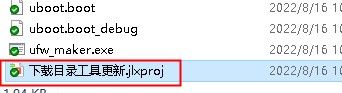
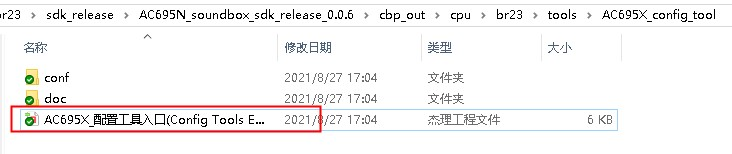
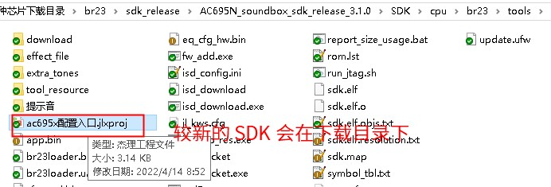

3.2. 如何更新工具
Important
在更新时，请确保电脑网络正常。
工具的新版本一般会包含了 BUG 修复以及新功能的添加。为了进行正常开发、生产，尽量保持工具版本为最新版本。
这里所说的工具，包括了下面几种：
名称 |
作用 |
备注 |
|---|---|---|
工具链 |
开发，编译链接 |
包括编译器、链接器、标准库文件(libc.a)等，用于生成 ELF 格式的文件 |
isd_download 等下载工具 |
用于下载固件到小机、生成固件文件 |
|
配置工具、调音工具 |
开发、配置 |
|
一拖二烧录器 |
量产烧录 |
|
一拖八烧录器 |
量产烧录 |
因为一些原因，不同的工具升级方式略有区别，总结如下：
3.2.1. 更新工具链
更新工具链（也就是编译器、链接器等）的方式，详见：更新杰理工具链。
Important
注意，这个只是用于更新工具链。与其它工具无关，请勿混淆。
3.2.2. 更新 isd_download 等下载工具
在 SDK 下载目录中，通常有一个入口文件【下载目录工具更新.jlxproj】，如下图所示：

打开后，点【检查更新】按钮更新。具体参考：如何使用 .jlxproj 文件来升级工具
3.2.3. 更新配置工具、调音工具等
在 SDK 下载目录中，通常有一个入口文件（.jlxproj后缀）。双击打开这个文件，可以打开开发需要的一些工具。
例如，配置工具、调音工具等。
不同的 SDK 中，该入口文件界面显示略有不同，以下是几种常见的界面：




打开后，找到界面上的按钮【检查依赖的软件包是否更新】，点击检查更新即可。
3.2.4. 更新一拖二、一拖八烧录器
一拖二、一拖八工具有专门的更新方式，详见：
3.2.5. 其它工具
其它未提及的工具，可以在 工具最新版本 处找到最新版本的链接下载。